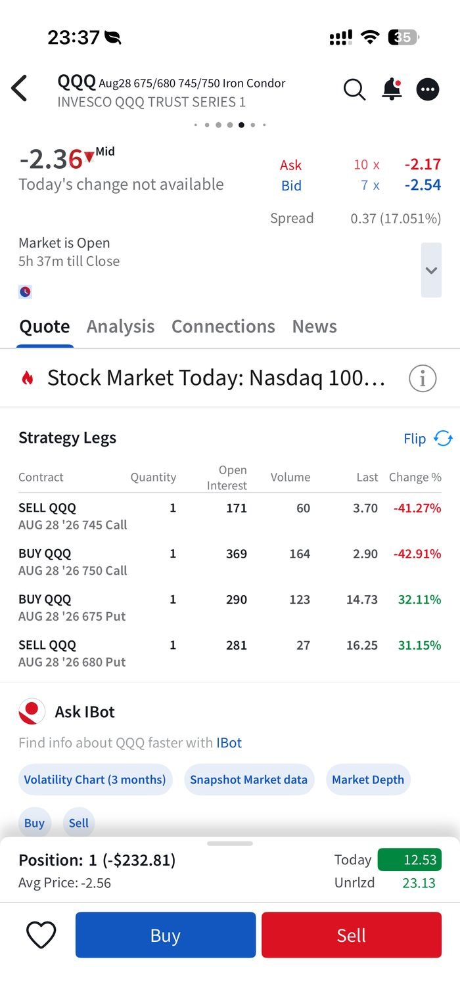
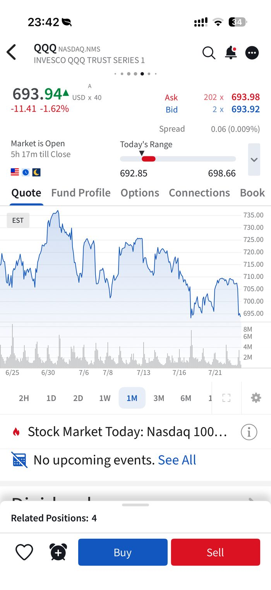
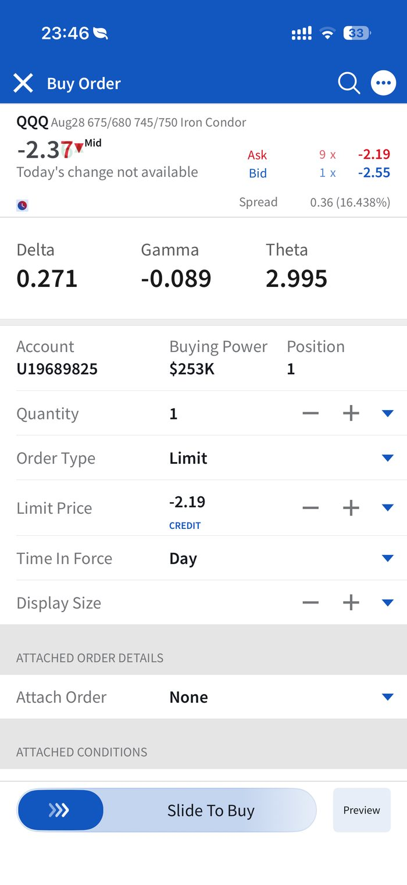

QQQ dropped fast on 23 Jul and both my own cushion checks flashed red at once. Here's the read, the decision, and exactly how I placed the closing order.2026年7月23日QQQ急跌，我自己设定的两个缓冲检查同时亮红灯。以下是判断过程、决定，以及我下平仓单的具体操作。
| Structure结构 | QQQ Aug28'26 4-leg Iron CondorQQQ 2026年8月28日到期，4腿铁鹰 |
|---|---|
| Legs各腿 | Sold 680P / Bought 675P / Sold 745C / Bought 750C卖出680P / 买入675P / 卖出745C / 买入750C |
| Entry建仓 | 17 Jul 2026 — net credit ~$256–259 (avg price -2.56)2026年7月17日——净权利金 约$256–259（均价 -2.56） |
| Breakeven (low)保本点（下限） | $677.41 |
| Hard cut-loss硬止损位 | $678 (Paul's own standing level, see Table 29 Cushion tab)（Paul自订止损位，见Table 29「缓冲」页签） |
On 23 Jul earlier in the day, QQQ was at $705.35 — Put Variance 3.59%, ⚠️ Tight but not urgent. By evening, QQQ had dropped to $693.94 (−$11.41 / −1.62% that day), pulling both of my own warning checks into the red at once:7月23日白天，QQQ为$705.35，认沽差幅3.59%——⚠️偏紧但尚不紧急。到晚间，QQQ已跌至$693.94（当日下跌$11.41 / -1.62%），我自订的两个预警同时进入红色区域：
Only $15.94 (2.3%) of room was left before the hard $678 cut-loss — and that gap had shrunk fast, confirmed by the option leg prices themselves: the short 680P and long 675P had both jumped +31–32% since entry, while the short 745C and long 750C had both dropped −38% to −43%. That's a real directional move, not just time decay.距$678硬止损位只剩$15.94（2.3%）的空间——而且这个空间正在快速收窄，从期权各腿价格本身也能证实：卖出的680P与买入的675P自建仓以来均上涨31–32%，而卖出的745C与买入的750C均下跌38%至43%。这是真实的方向性走势，不只是时间衰减。
Unrealized profit at that point was only $23–24 — about 9% of the $259 max credit, far short of the usual 50%-of-credit take-profit target (~$130). Normally that argues for holding.当时未实现盈利仅$23–24——约为$259最大权利金的9%，远低于通常50%权利金（约$130）的获利了结目标。一般来说这代表应该续持。
But per my own standing rule — check Nearest cut-loss first, it covers both directions — a red-zone reading takes priority over the profit target. Holding for another $100+ of profit risked the full $241 max loss for a shrinking reward, with price only one more bad day from the hard stop.但根据我自己订下的准则——先看「最近止损」，它同时涵盖两侧方向——红色危险区的信号应优先于获利目标。为了再赚$100多而续持，等于是用$241的最大亏损去搏一个正在缩小的回报，而股价只差一个坏交易日就会触及硬止损。
| Credit received (entry)建仓收到的权利金 | ~$256 |
|---|---|
| Debit paid (close)平仓支付 | ~$219 (at the Ask, -2.19)（按卖价 -2.19） |
| Locked-in profit锁定盈利 | ~$37 on 1 contract, before any final commission adjustment1口合约，未计最终手续费调整 |
Small relative to the $259 max credit, but the point was avoiding the $241 max loss with price only 2.3% from the hard cut-loss — not squeezing every last dollar out of a position that had already moved against the put side.相对于$259的最大权利金来说金额不大，但重点在于避免了$241的最大亏损——当时股价距硬止损仅2.3%——而不是在认沽一侧已经走势不利的情况下，硬要榨出最后一分钱。


